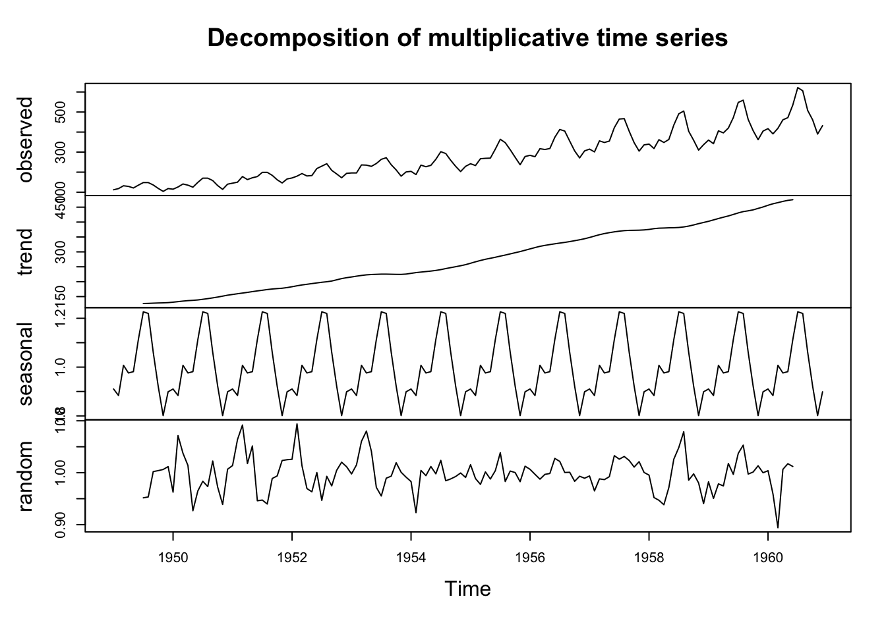

Test/Implement Solutions (similar to experimentation)
Analyze Results (equivalent to data collection and analysis)
Make Decisions (conclusion phase)
Monitor and Review (parallels replication)
A personal note
What does data driven mean?
I thought scientific
I thought wrong :(
I got very frustrated and considered getting an MBA just so I could understand the motivations of management
I gate-kept the term research on a company-wide zoom meeting
I got laid off and became a research scientist :)
Defining goals clearly for analytic thinkers is very important. Clarification questions should not be intended or received as hostile. Alas.
Activity 1
Here are some time series data analysis tools we have learned in class. Where do they fit in the scientific method?
time series plot
autocorrelation plot
lag plot
trend estimation
detrending
differencing
writing out a mathematical model
optimizing plots (adding good axis labels, etc)
ask a time series research question
Activity 1 Solutions
(using chatGPT list)
time series plot: 1, 5, 6, 7
autocorrelation plot: 1, 5
lag plot: 5
trend estimation: 5, 6, 7
detrending: 5
differencing: 5
writing out a mathematical model: 5, 7
optimizing plots (adding good axis labels, etc): 7
ask a time series research question: 2, 3
Activity 2
What are some things we have not done?
Activity 2 Solutions
What are some things we have not done? - replicate results - test a specific hypothesis (well, we kind of have) - report/publish results - experiment / collect data
Activity 3: Applying the data analysis process
Create a .qmd file
Add headers for each step of the scientific method or business problem-solving process
Apply the appropriate tools at each step of the process for the AirPassengers data.
1. Observation
Code
library(astsa)?AirPassengerssummary(AirPassengers)## Min. 1st Qu. Median Mean 3rd Qu. Max. ## 104.0 180.0 265.5 280.3 360.5 622.0tsplot(AirPassengers)
2. Question
Are the number of air passengers increasing over time? If so, how fast?
Is there an increasing trend? What is the form of the trend?
Is there a seasonality to the monthly number of air passengers? When are the peaks?
Is there a seasonal trend? What is the period? When are the peaks?
What is a plausible range of values for the predicted number of passngers for the next month?
Can we make a forecast? If so, how good do we expect this forecast to be?
3. Hypothesis
There is an increasing linear trend.
There is a seasonal component.
We can accurately model the time series using tools that allow forecasting.
4. Experiment
Not really applicable here…
5. Data collection and analysis
Data already collected! In practice, we may need to clean it.
Exploratory data analysis: decompose?
plot(decompose(AirPassengers)) ## hmm
5. Data collection and analysis
Data already collected! In practice, we may need to clean it.
Exploratory data analysis: decompose?
AP_decomp <-decompose(AirPassengers, type ="multiplicative")plot(AP_decomp) ## hmm

5. Data Collection and analysis
Doesn’t look quite right… maybe we should talk to the senior analyst about a more advanced modeling technique?
AP.predict <-predict(AP.hw, n.ahead =4*12)plot(AP.hw, type ="l", col ="red", xlim =c(1950, 1965), ylim =c(100, 800))points(AirPassengers, type ="l")points(AP.predict, type ="l", lty =2, col ="red")